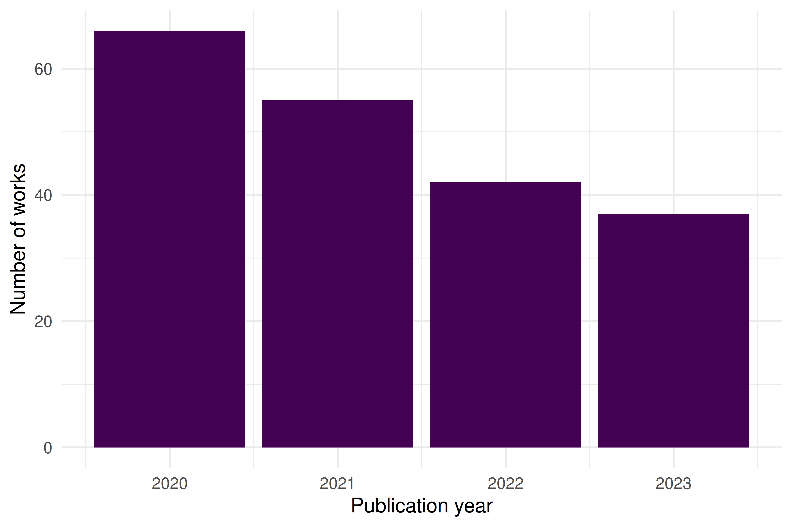

6 APIs and Packages
6.1 Learning objectives
After completing this chapter, you will be able to:
- Query the OpenAlex API using
openalexRto retrieve works, authors, institutions, and concepts - Apply filters, pagination, and sampling to control the size and scope of API results
- Deduplicate records by DOI and clean author and affiliation metadata
- Cache API responses locally so repeated book builds do not re-query the API
- Use
rcrossrefandpubmedRas complementary data sources
6.3 Conceptual background
Bibliometric research begins with data. The quality and completeness of a bibliographic corpus determines the validity of every downstream analysis — from citation counts to network maps to topic models.
Historically, Web of Science and Scopus have dominated as data sources for scientometric research. Both require institutional subscriptions and impose restrictions on bulk data use. The launch of OpenAlex in 2022 changed this landscape fundamentally (Priem et al. 2022). OpenAlex is a fully open index of over 250 million scholarly works, built from Crossref, PubMed, institutional repositories, and other open sources. It provides a free REST API with no authentication required, making it the ideal backbone for reproducible bibliometric research.
OpenAlex organises its data around five entity types: works (publications), authors, sources (journals, repositories), institutions, and topics (hierarchical subject tags). Each entity has a unique OpenAlex ID and can be queried via filters on metadata fields such as publication date, citation count, open-access status, and institutional affiliation.
The openalexR package provides a tidy R interface to the OpenAlex API. It handles pagination, rate limiting, and result parsing, returning clean tibbles ready for analysis. For metadata not covered by OpenAlex — such as reference lists and funding information — rcrossref provides access to Crossref’s extensive metadata registry, and pubmedR covers the biomedical literature indexed in PubMed/MEDLINE.
6.4 Worked example
We build a small corpus of recent scientometrics research, demonstrating the full acquisition-to-clean-data pipeline.
6.4.1 Querying works from OpenAlex
The core function is oa_fetch(). We search for works published in the journal Scientometrics between 2020 and 2023, sampling 200 records for a manageable demonstration.
works <- oa_fetch(
entity = "works",
primary_location.source.id = "S148561398",
from_publication_date = "2020-01-01",
to_publication_date = "2023-12-31",
options = list(sample = 200, seed = 42)
)
glimpse(works)#> Rows: 200
#> Columns: 45
#> $ id <chr> "https://openalex.org/W4220987815", "htt…
#> $ title <chr> "The link between countries’ economic an…
#> $ display_name <chr> "The link between countries’ economic an…
#> $ authorships <list> [<tbl_df[2 x 7]>], [<tbl_df[4 x 7]>], […
#> $ abstract <chr> "Abstract We studied the research perfor…
#> $ doi <chr> "https://doi.org/10.1007/s11192-022-0431…
#> $ publication_date <date> 2022-03-12, 2021-07-10, 2023-06-17, 202…
#> $ publication_year <int> 2022, 2021, 2023, 2020, 2021, 2023, 2023…
#> $ relevance_score <dbl> 1.000, 0.998, 0.997, 0.996, 0.995, 0.995…
#> $ fwci <dbl> 11.792, 2.616, 0.474, 1.466, 0.656, 5.20…
#> $ cited_by_count <int> 46, 21, 1, 14, 8, 11, 4, 1, 16, 9, 2, 7,…
#> $ counts_by_year <list> [<data.frame[5 x 2]>], [<data.frame[5 x…
#> $ ids <list> <"https://openalex.org/W4220987815", "h…
#> $ type <chr> "article", "article", "article", "articl…
#> $ is_oa <lgl> TRUE, TRUE, FALSE, FALSE, FALSE, FALSE, …
#> $ is_oa_anywhere <lgl> TRUE, TRUE, FALSE, FALSE, FALSE, FALSE, …
#> $ oa_status <chr> "hybrid", "hybrid", "closed", "closed", …
#> $ oa_url <chr> "https://link.springer.com/content/pdf/1…
#> $ any_repository_has_fulltext <lgl> TRUE, TRUE, FALSE, FALSE, FALSE, FALSE, …
#> $ source_display_name <chr> "Scientometrics", "Scientometrics", "Sci…
#> $ source_id <chr> "https://openalex.org/S148561398", "http…
#> $ issn_l <chr> "0138-9130", "0138-9130", "0138-9130", "…
#> $ host_organization <chr> "https://openalex.org/P4310320108", "htt…
#> $ host_organization_name <chr> "Springer Nature (Netherlands)", "Spring…
#> $ landing_page_url <chr> "https://doi.org/10.1007/s11192-022-0431…
#> $ pdf_url <chr> "https://link.springer.com/content/pdf/1…
#> $ license <chr> "cc-by", "cc-by", NA, NA, NA, NA, "cc-by…
#> $ version <chr> "publishedVersion", "publishedVersion", …
#> $ referenced_works <list> <"https://openalex.org/W1581511728", "h…
#> $ referenced_works_count <int> 66, 74, 76, 63, 74, 72, 51, 64, 20, 52, …
#> $ related_works <list> <"https://openalex.org/W4226161467", "h…
#> $ concepts <list> [<data.frame[10 x 5]>], [<data.frame[16…
#> $ topics <list> [<tbl_df[12 x 5]>], [<tbl_df[12 x 5]>],…
#> $ keywords <list> [<data.frame[9 x 3]>], [<data.frame[14 …
#> $ is_paratext <lgl> FALSE, FALSE, FALSE, FALSE, FALSE, FALSE…
#> $ is_retracted <lgl> FALSE, FALSE, FALSE, FALSE, FALSE, FALSE…
#> $ language <chr> "en", "en", "en", "en", "en", "en", "en"…
#> $ sustainable_development_goals <list> [<data.frame[1 x 3]>], [<data.frame[1 x…
#> $ awards <list> <"https://openalex.org/G1419670400", "G…
#> $ funders <list> [<data.frame[2 x 3]>], [<data.frame[1 x…
#> $ apc <list> [<data.frame[2 x 5]>], [<data.frame[2 x…
#> $ first_page <chr> "2871", "7917", "4611", "633", "4609", "…
#> $ last_page <chr> "2896", "7936", "4650", "661", "4638", "…
#> $ volume <chr> "127", "126", "128", "124", "126", "128"…
#> $ issue <chr> "5", "9", "8", "1", "6", "9", "7", "1", …The result is a tibble where each row is a work and columns include id, display_name, publication_date, cited_by_count, doi, and nested list-columns for authors and concepts.
6.4.2 Inspecting the results
works |>
select(display_name, publication_date, cited_by_count, doi) |>
arrange(desc(cited_by_count)) |>
head(10)#> # A tibble: 10 × 4
#> display_name publication_date cited_by_count doi
#> <chr> <date> <int> <chr>
#> 1 'Are principals instructional leaders … 2020-01-30 227 http…
#> 2 Combining Web of Science and Scopus da… 2022-08-25 210 http…
#> 3 Publication patterns’ changes due to t… 2021-06-23 194 http…
#> 4 Link-based approach to study scientifi… 2021-07-10 192 http…
#> 5 Sample size in bibliometric analysis 2020-07-31 187 http…
#> 6 Open peer review: promoting transparen… 2020-05-26 160 http…
#> 7 Preliminary analysis of COVID-19 acade… 2020-06-25 156 http…
#> 8 Identifying interdisciplinary topics a… 2023-07-03 133 http…
#> 9 A bibliometric review of research on i… 2021-04-26 89 http…
#> 10 The impact of research output on econo… 2020-03-28 71 http…6.4.4 Deduplication by DOI
Real-world corpora often contain duplicates when merging results from multiple queries or sources. The dedupe_by_doi() function from our companion package handles this cleanly.
works_with_dupes <- bind_rows(works, works[1:10, ])
cat(glue("Before dedup: {nrow(works_with_dupes)} rows\n\n"))#> Before dedup: 210 rows#> After dedup: 200 rows6.4.5 Caching for reproducible builds
The fetch_openalex() wrapper in R/api_helpers.R automatically caches API responses to disk. On subsequent calls with the same arguments, it reads from cache instead of hitting the API.
works_cached <- fetch_openalex(
entity = "works",
primary_location.source.id = "S148561398",
from_publication_date = "2023-01-01",
to_publication_date = "2023-06-30",
options = list(sample = 50, seed = 42),
cache_dir = "_freeze/openalex_cache",
cache_days = 30
)
nrow(works_cached)#> [1] 506.4.6 Complementary sources: Crossref
For detailed metadata (reference lists, funders, licenses), Crossref is invaluable.
6.4.7 Visualization
works |>
mutate(year = year(publication_date)) |>
count(year) |>
ggplot(aes(x = year, y = n)) +
geom_col(fill = palette_sci(1)) +
labs(x = "Publication year", y = "Number of works") +
theme_sci()
Figure 6.1: Annual publication counts for sampled Scientometrics articles (2020–2023).
6.5 Diagnostics and interpretation
When working with API data, always verify:
-
Completeness: Compare your result count against the API’s reported
meta$countto confirm you received all expected records. With sampling, the count reflects the sample, not the full set. -
Coverage dates: Check
min(works$publication_date)andmax(works$publication_date)to confirm your date filters were applied correctly. -
DOI presence: Not all works have DOIs. Check
mean(!is.na(works$doi))to understand the DOI coverage rate in your corpus. -
Nested columns: Author and concept columns are list-columns. Use
tidyr::unnest()carefully and inspect forNULLentries before unnesting.
#> Total works: 200#> DOI coverage: 100%#> Date range: 2020-01-02 to 2023-12-166.7 Limitations and responsible use
- Coverage bias: OpenAlex is strongest in English-language, peer-reviewed journal articles. Conference proceedings, books, and non-English literature may be underrepresented. Always report the data source and its known coverage limitations.
- Metadata quality: Author names and affiliations are parsed algorithmically and may contain errors, especially for names with diacritics or non-Latin scripts.
- Temporal lag: OpenAlex updates continuously but may lag behind primary databases by days or weeks. Very recent publications may be missing.
- API rate limits: OpenAlex allows 10 requests per second for unauthenticated users (100/s with a polite pool email). Respect these limits to avoid being throttled.
- Reproducibility: API results can change as OpenAlex updates its data. Always cache results and document the date of data collection for reproducibility (Hicks et al. 2015).
6.9 Common pitfalls
-
Not caching: Running
oa_fetch()directly in code chunks without caching means everyquarto renderhits the API, producing different results each time and risking rate limits. -
Ignoring pagination:
oa_fetch()handles pagination automatically, but very large queries (>10,000 works) can time out. Use filters to narrow your query or use cursor-based pagination. -
Confusing sampling with filtering:
options = list(sample = 200)returns a random sample from the full result set, not the first 200 records. This is useful for demonstrations but not for exhaustive analyses. - Treating OpenAlex IDs as permanent: While generally stable, OpenAlex IDs can change when entities are merged. Use DOIs as the primary identifier for works.
- Merging sources without deduplication: When combining results from OpenAlex and Crossref, records may overlap. Always deduplicate by DOI before analysis.
6.10 Exercises
Fetch works by institution. Use
oa_fetch()to retrieve works affiliated with your own institution. How many works does OpenAlex index for it? What is the DOI coverage rate? (Hint: find your institution’s OpenAlex ID viaoa_fetch(entity = "institutions", search = "..."))Compare Crossref metadata. Pick a DOI from your fetched works and retrieve its metadata from Crossref using
rcrossref::cr_works(). Compare the citation count reported by OpenAlex vs. Crossref. Why might they differ?Build a multi-year corpus. Fetch all works from a journal of your choice for 2015–2023 (without sampling). Plot the annual publication count and the median citation count per year. What trends do you observe?
6.11 Solutions
Solutions are provided in 2.11.
6.12 Further reading
- Priem et al. (2022) — The OpenAlex paper; describes the data model, coverage, and API design.
-
Aria and Cuccurullo (2017) — The
bibliometrixpackage; an alternative high-level interface for bibliometric data acquisition and analysis. - Garfield (1955) — The foundational paper on citation indexing, motivating why these databases exist.
6.13 Session info
#> R version 4.4.1 (2024-06-14)
#> Platform: x86_64-pc-linux-gnu
#> Running under: Ubuntu 24.04.4 LTS
#>
#> Matrix products: default
#> BLAS: /usr/lib/x86_64-linux-gnu/openblas-pthread/libblas.so.3
#> LAPACK: /usr/lib/x86_64-linux-gnu/openblas-pthread/libopenblasp-r0.3.26.so; LAPACK version 3.12.0
#>
#> locale:
#> [1] LC_CTYPE=C.UTF-8 LC_NUMERIC=C LC_TIME=C.UTF-8
#> [4] LC_COLLATE=C.UTF-8 LC_MONETARY=C.UTF-8 LC_MESSAGES=C.UTF-8
#> [7] LC_PAPER=C.UTF-8 LC_NAME=C LC_ADDRESS=C
#> [10] LC_TELEPHONE=C LC_MEASUREMENT=C.UTF-8 LC_IDENTIFICATION=C
#>
#> time zone: UTC
#> tzcode source: system (glibc)
#>
#> attached base packages:
#> [1] stats graphics grDevices utils datasets methods base
#>
#> other attached packages:
#> [1] rcrossref_1.2.1 gt_1.3.0 tidytext_0.4.3 glue_1.8.1
#> [5] openalexR_3.0.1 lubridate_1.9.5 forcats_1.0.1 stringr_1.6.0
#> [9] dplyr_1.2.1 purrr_1.2.2 readr_2.2.0 tidyr_1.3.2
#> [13] tibble_3.3.1 ggplot2_4.0.3 tidyverse_2.0.0
#>
#> loaded via a namespace (and not attached):
#> [1] tidyselect_1.2.1 viridisLite_0.4.3 farver_2.1.2 urltools_1.7.3.1
#> [5] viridis_0.6.5 S7_0.2.2 fastmap_1.2.0 janeaustenr_1.0.0
#> [9] promises_1.5.0 digest_0.6.39 timechange_0.4.0 mime_0.13
#> [13] lifecycle_1.0.5 tokenizers_0.3.0 brand.yml_0.1.0 magrittr_2.0.5
#> [17] compiler_4.4.1 rlang_1.2.0 sass_0.4.10 tools_4.4.1
#> [21] utf8_1.2.6 yaml_2.3.12 knitr_1.51 labeling_0.4.3
#> [25] stopwords_2.3 htmlwidgets_1.6.4 curl_7.1.0 here_1.0.2
#> [29] plyr_1.8.9 xml2_1.5.2 RColorBrewer_1.1-3 httpcode_0.3.0
#> [33] miniUI_0.1.2 withr_3.0.2 triebeard_0.4.1 grid_4.4.1
#> [37] xtable_1.8-8 scales_1.4.0 dichromat_2.0-0.1 crul_1.6.0
#> [41] cli_3.6.6 rmarkdown_2.31 generics_0.1.4 otel_0.2.0
#> [45] rstudioapi_0.18.0 httr_1.4.8 tzdb_0.5.0 cachem_1.1.0
#> [49] vctrs_0.7.3 Matrix_1.7-0 jsonlite_2.0.0 bookdown_0.46
#> [53] hms_1.1.4 jquerylib_0.1.4 codetools_0.2-20 DT_0.34.0
#> [57] stringi_1.8.7 gtable_0.3.6 later_1.4.8 downlit_0.4.5
#> [61] pillar_1.11.1 htmltools_0.5.9 R6_2.6.1 rprojroot_2.1.1
#> [65] evaluate_1.0.5 shiny_1.13.0 lattice_0.22-6 SnowballC_0.7.1
#> [69] memoise_2.0.1 httpuv_1.6.17 bslib_0.10.0 Rcpp_1.1.1-1.1
#> [73] gridExtra_2.3 xfun_0.57 fs_2.1.0 pkgconfig_2.0.3